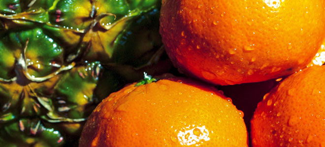

Mandarinka

Vždyzelená rostlina, druh rodu Citrus. Název „mandarinka“ pochází ze španělského jazyka a obsahuje údaj, že se ovoce snadno oloupe (se mondar - „snadno se oloupe“). Rostlina pochází z jižní Číny a do Evropy se dostala počátkem 19. století. V Indii, Číně, Jižní Koreji, Japonsku a Indočíně je mandarinka nejběžnějším citrusovým ovocem. Mandarinka se pěstuje po celém Středomoří, stejně jako v Ázerbájdžánu, Gruzii, Abcházii, Brazílii, Argentině a Spojených státech. Mandarinka obvykle nepřesahuje 4 m na výšku, ale pokud je strom starší 30 let, může být vyšší.